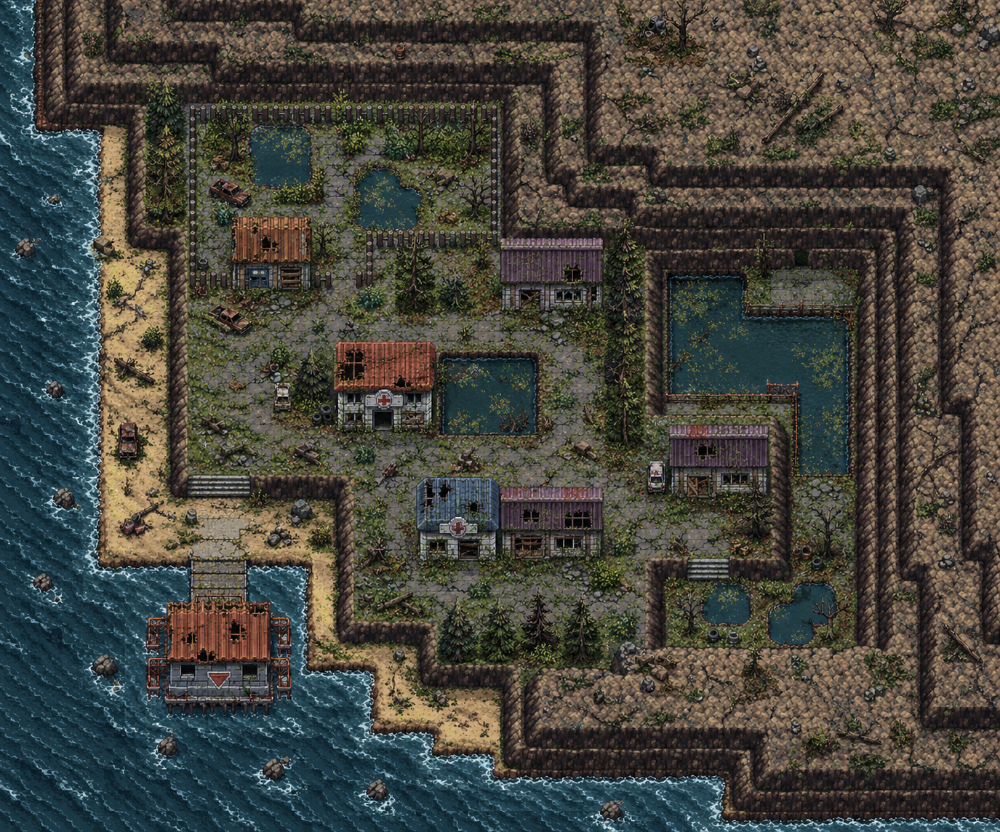

CENÁRIO 01 // COSTA
Zona Costeira
Uma região isolada com praias, barreiras e casas exploráveis. Atravesse a costa e investigue os interiores para encontrar uma rota segura.
Ver imagens ↗02 // CARTOGRAFIA
Dois ambientes formam a base visual do protótipo. Outros espaços aparecem como possibilidades de expansão.
CENÁRIO DISPONÍVEL

Uma região isolada com praias, barreiras e casas exploráveis. Atravesse a costa e investigue os interiores para encontrar uma rota segura.
Ver imagens ↗EXPANSÃO PLANEJADA
Portões, alarmes e acesso restrito. Ideal para puzzles de autorização.
Local focado em ferramentas, peças, fios e enigmas mecânicos.
Área final em que o jogador precisa juntar as informações encontradas anteriormente.
Ligação com o código: o registro de cenas usa objetos com identificador, nome, cenário pai, ponto de entrada e funções de transição. Isso prepara a navegação para crescer sem reescrever o jogo inteiro.
Entender a arquitetura ↗